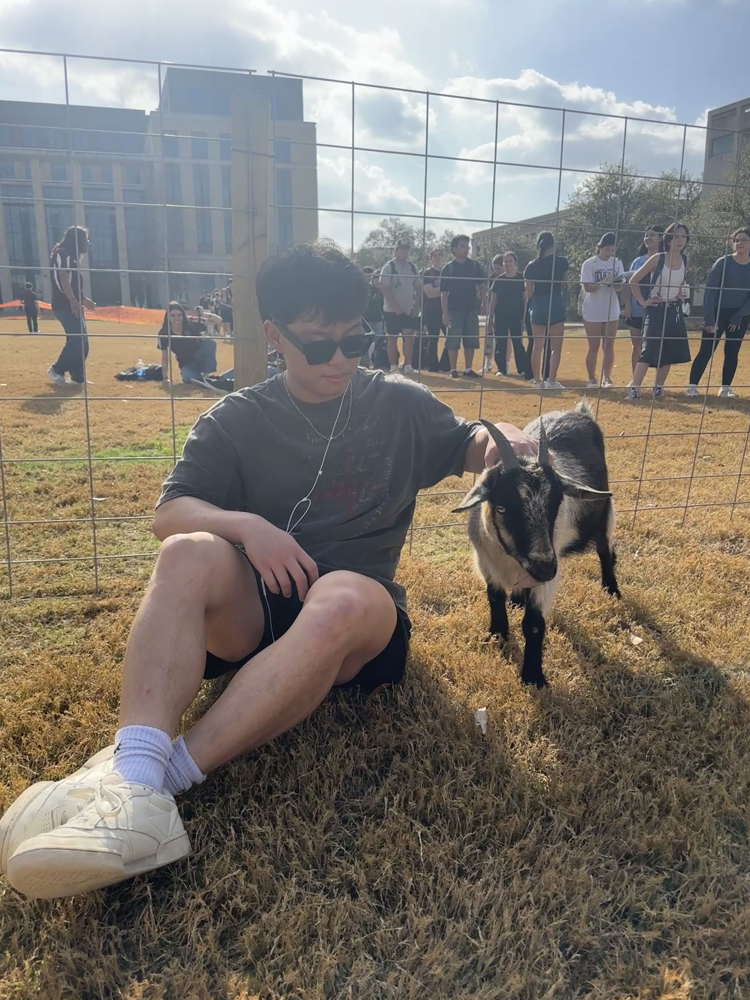

Computer science student
Hi, I'm Vincent.
I am a junior at Texas A&M University studying computer science. I like building useful software, telling stories through video, and finding the space where technology and creativity meet.
Explore my work
About Me
I am a junior at Texas A&M University studying computer science. I enjoy learning how technology can solve practical problems, but I also like the creative side of building: taking an idea and turning it into something people can actually use. Through my coursework and personal projects, I am continuing to strengthen my problem-solving skills while exploring the parts of technology that interest me most.
Outside the classroom, videography has become an important way for me to express myself. I began making videos for class projects in high school, started filming sports after buying my first camera in college, and now work with the Aggie football creative team as a videographer and editor. Sports have also been part of my life since I was eight, especially baseball, and they continue to keep me active.
I also enjoy traveling, listening to music, and spending time with my friends. This website brings those interests together with the projects I am building and the experiences that continue to shape me as a student, creator, and teammate.